2026年北京市中考数学试卷 原卷解析
2026年北京市初中学业水平考试
数学试卷
考生须知 | 1．本试卷共6页，共两部分，三道大题，28道小题满分100分．考试时间120分钟 2．在试卷和草稿纸上准确填写姓名、准考证号、考场号和座位号． 3．试题答案一律填涂或书写在答题卡上，在试卷上作答无效． 4．在答题卡上，选择题、作图题用2B铅笔作答，其他试题用黑色字迹签字笔作答． 5．考试结束，将本试卷、答题卡和草稿纸一并交回． |
第一部分 选择题
一、选择题（共16分，每题2分）
第 题均有四个选项，符合题意的选项只有一个．
题均有四个选项，符合题意的选项只有一个．
1. 下列图形中，是中心对称图形的是（ ）
A.  B.
B.  C.
C.  D.
D. 
【答案】C
【解析】
【详解】解：A、不是中心对称图形，故本选项不符合题意；
B、不是中心对称图形，故本选项不符合题意；
C、是中心对称图形，故本选项符合题意；
D、不是中心对称图形，故本选项不符合题意；
2. 如图，三角尺的直角顶点在直线l上．若 ，则
，则 的大小为（ ）
的大小为（ ）

A.  B.
B.  C.
C.  D.
D. 
【答案】B
【解析】
【详解】解：三角尺的直角顶点在直线上，且直角等于 ，
，
，
，
．
3. 实数 ，
， 在数轴上的对应点的位置如图所示，下列结论中正确的是（ ）
在数轴上的对应点的位置如图所示，下列结论中正确的是（ ）

A.  B.
B.  C.
C.  D.
D. 
【答案】C
【解析】
【分析】根据数轴上点的位置确定， 的取值范围及正负性，结合绝对值的性质及有理数的大小比较法则进行判断．
【详解】解：由数轴可知，，，
∴
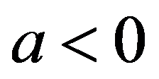
，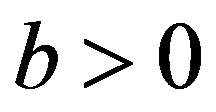
，A：∵，，
∴，
∴A不符合题意；
B：∵，
∴，
又 ∵
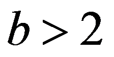
，∴，
∴B不符合题意；
C：∵，根据绝对值的性质可得 ，
∴C符合题意；
D：∵，，
∴，
∴D不符合题意．
4. 一个不透明的袋子中仅有 个球，其中有
个球，其中有 个白球、个黄球，其余都是红球，这个球除颜色外无其他差别．从袋子中随机摸出一个球，摸出的球是红球的概率是（ ）
个白球、个黄球，其余都是红球，这个球除颜色外无其他差别．从袋子中随机摸出一个球，摸出的球是红球的概率是（ ）
A.  B.
B.  C.
C.  D.
D. 
【答案】D
【解析】
【分析】先求出红球的个数，再用红球个数除以球的总个数，即可得到摸出红球的概率．
【详解】解：∵袋子中共有个球，其中个白球，个黄球，
∴红球的个数为 ，
∴随机摸出一个球是红球的概率为．
5. 方程组 的解为（ ）
的解为（ ）
A.
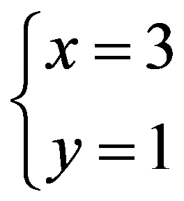
B.  C.
C.  D.
D. 
【答案】A
【解析】
【详解】解：
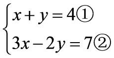
，将①式两边同乘2得，
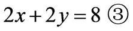
， 得，
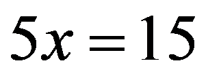
， 解得
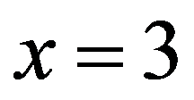
，将代入①式得，，
解得，
因此原方程组的解为．
6. 再生水利用提升工程是北京市“十五五”时期美丽北京建设的重大工程之一．北京市一家在建的再生水厂建成后每天能够供应 高品质再生水．若一年按365天计．则该再生水厂建成后，一年能够供应的高品质再生水的总量用科学记数法表示应为（ ）
高品质再生水．若一年按365天计．则该再生水厂建成后，一年能够供应的高品质再生水的总量用科学记数法表示应为（ ）
A.  B.
B.  C.
C.  D.
D. 
【答案】B
【解析】
【详解】解：∵每天供应量为 ，一年按365天计算
，一年按365天计算
∴一年总供应量为：
因此结果为 ．
．
7. 如图，点 在射线
在射线 上，在射线
上，在射线 上截取
上截取 ，分别以
，分别以 、为圆心，
、为圆心， 长为半径画弧，两弧相交于点
长为半径画弧，两弧相交于点 ．连接
．连接 ，
， ，则
，则 的大小为（ ）
的大小为（ ）

A. B. C.  D.
D.
【答案】A
【解析】
【分析】根据作图过程可知 是等边三角形，从而得到
是等边三角形，从而得到 ，
， ，由点在射线上，在射线上截取可知、、
，由点在射线上，在射线上截取可知、、 三点共线，结合可得
三点共线，结合可得 ，利用等腰三角形性质及邻补角定义即可求解．
，利用等腰三角形性质及邻补角定义即可求解．
【详解】解：如图：

由作图可知， ，
，
∴是等边三角形，
∴，
∵点在射线上，在射线上截取，
∴、、三点共线，
∴ ，
，
∵，，
∴，
∴ ．
．
8. 在平面直角坐标系 中，点
中，点 ，
， ．若点C不与点A重合，且以B，O，C为顶点的三角形与
．若点C不与点A重合，且以B，O，C为顶点的三角形与 全等，则称C为B的“友好点”．给出下面四个结论：
全等，则称C为B的“友好点”．给出下面四个结论：
①对于所有的点B，在y轴上都有B的“友好点”；
②能够找到点B，使得在x轴上有B的“友好点”；
③对于所有的点B，在第一象限内都有B的“友好点”；
④能够找到点B，使得在第四象限内有B的“友好点”．
上述结论中，所有正确结论的序号是（ ）
A. ①③B. ①④C. ②③D. ②④
【答案】B
【解析】
【分析】 先明确的边长特征，再逐个判断每个结论，通过计算或举例验证结论是否成立．
【详解】解：∵， ，
， ，
，
∴是直角三角形， ，三边长为
，三边长为 ，
， ，
， ，
，
① 对任意，取点 ，该点在
，该点在 轴上，此时
轴上，此时 ，
， ，
， 为公共边，
为公共边，
∴ ，且不与重合，
，且不与重合，
因此轴上一定存在友好点，①正确；
② 假设 轴上存在友好点
轴上存在友好点 ，不与重合，也不能与
，不与重合，也不能与 重合（否则无法构成三角形），
重合（否则无法构成三角形），
∵全等三角形斜边相等，斜边为，
∴ ，
，
解得 或
或 ，均不符合要求，
，均不符合要求，
因此轴上不存在友好点，②错误；
③ 当 时，所有符合条件的友好点为
时，所有符合条件的友好点为 （在轴），第一象限内没有友好点，
（在轴），第一象限内没有友好点，
因此不是对所有点都成立，③错误；
④ 举例：取 ，如图，设
，如图，设 与轴交于点，过点作
与轴交于点，过点作 轴于点
轴于点 ，
，

∵ ，
，
∴ ，
， ，
，
∴ ，
，
在 中，
中， ，
，
∴ ，
，
解得 ，
，
∴ ，
，
∴ ，
，
∵ ，
， ，
， ，
，
∴ ，
，
∴ ，
，
∴ ，
，
∴ ，
，
∴ ，
，
∴ ，该点在第四象限，
，该点在第四象限，
因此存在这样的点，使得在第四象限内有B的“友好点”，故④正确，
综上，正确结论为①④．
第二部分 非选择题
二、填空题（共16分，每题2分）
9. 若代数式
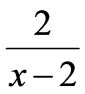
有意义，则实数x的取值范围是________．【答案】
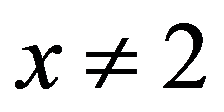
【解析】
【分析】根据分式有意义的条件，分式的分母不等于，列不等式求解即可得到实数的取值范围．
【详解】解：由题意得，
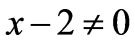
，解得，，
∴实数x的取值范围是．
10. 分解因式：
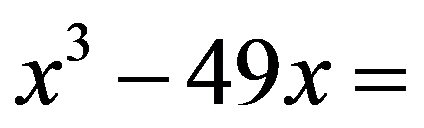
________．【答案】
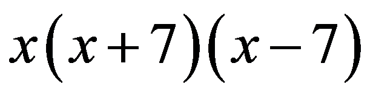
【解析】
【详解】解：原式
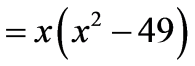
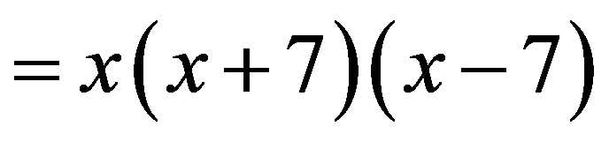
．11. 在凸五边形中，，，则________．
【答案】
【解析】
【分析】根据多边形内角和可得五边形的内角和为，然后问题可求解．
【详解】解：根据多边形内角和可知：五边形的内角和为，
∵，
∴，
∵，
∴．
12. 某学校共有2000名学生．为了解这些学生放假期间每周体育活动时间（单位：h）的情况，从中随机抽取了100名学生进行调查，数据整理如下：
学校建议，每周体育活动时间小于
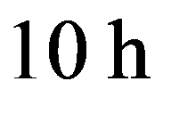
的学生应适当增加体育活动时间．根据以上信息．估计该学校2000名学生中应适当增加体育活动时间的学生人数是________．【答案】
【解析】
【分析】先求出样本中每周体育活动时间小于的学生人数，计算对应频率，再用全校总人数乘以该频率，即可得到估计结果．
【详解】解：由题意，抽取的样本中，每周体育活动时间小于的学生人数为，
∴该校名学生中应适当增加体育活动时间的学生人数为
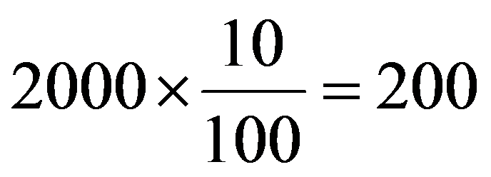
．13. 在平面直角坐标系中，函数
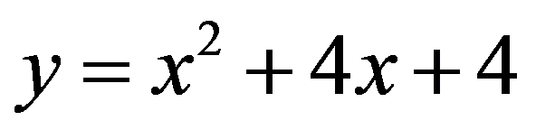
的图象经过点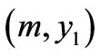
和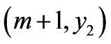
．若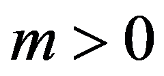
，则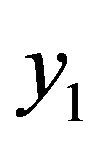
________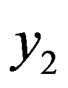
（填“ ”“
”“ ”或“
”或“ ”）．
”）．【答案】
【解析】
【分析】先将二次函数解析式配方，得到抛物线的开口方向与对称轴，再根据二次函数的增减性，结合判断两点横坐标的位置，即可比较与的大小．
【详解】解：对函数解析式配方得
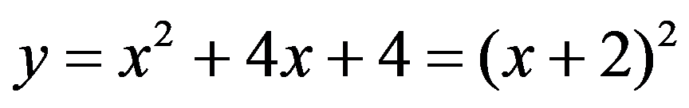
，，
 抛物线开口向上，对称轴为直线，
抛物线开口向上，对称轴为直线，
当时，随的增大而增大，
，
，
．
14. 如图，的两条对角线相交于点O．已知的面积为，的长为，当的长为________时，是菱形．
【答案】
【解析】
【分析】由菱形面积公式
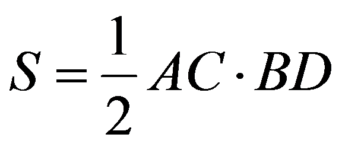
，解得，故．【详解】解：由题意，若是菱形，
则的面积，
∵的面积为，的长为，
∴
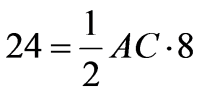
．解得．∵四边形是菱形，
∴
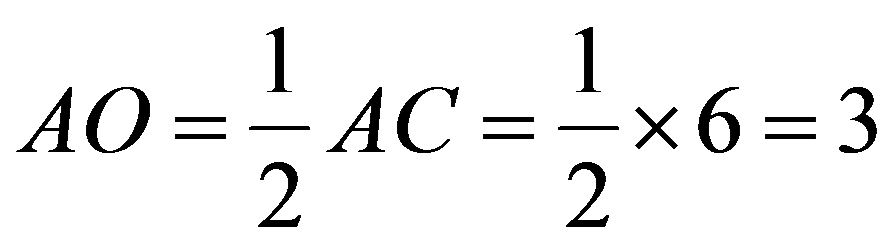
．15. 如图，在平面直角坐标系中，过轴正半轴上的点作轴的平行线，分别交函数
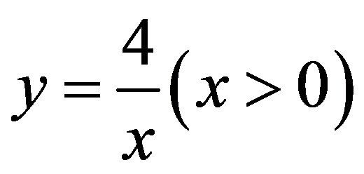
和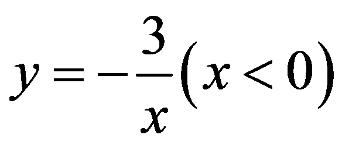
的图象于点、，过点作轴的垂线，垂足为，连接 交轴于点，则
交轴于点，则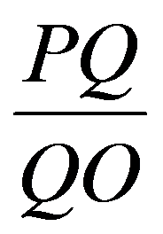
的值为________．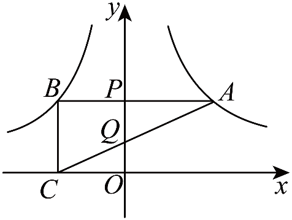
【答案】
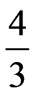
##【解析】
【分析】设点的纵坐标为，根据平行于轴直线上点的纵坐标相等，结合反比例函数解析式表示出点和点的坐标，进而得到点的坐标. 利用平行线性质证明，根据相似三角形对应边成比例即可求解．
【详解】解：∵点在轴正半轴上，
∴设点的坐标为
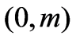
，其中，∵直线平行于轴，
∴点和点的纵坐标均为，
∵点、分别在函数和的图象上，
∴把代入，得
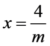
，∴点的坐标为
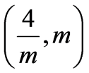
，把代入，得，
∴点的坐标为
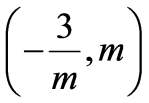
，∵轴于点，
∴点的坐标为
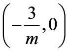
，∴，，
∵轴，即，
∴，，
∴，
∴，
∴
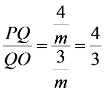
．16. 如图所示，公路旁自西向东依次有
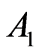
，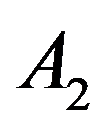
，…，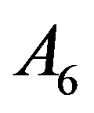
共6处住宅和一所学校．每个工作日早上，每处住宅各有1名学生需乘同一辆校车前往该学校，校车仅在设于某一住宅处的车站停车一次，每名学生需从自家住宅沿公路步行至该车站乘车，6名学生都上车后，校车沿公路向东行驶至学校．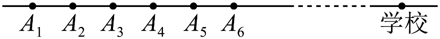
已知每名学生在相邻两处住宅间的步行时间均为，校车在相邻两处住宅间的行驶时间均为，校车从处至学校的行驶时间为．一名学生的理想通勤时间是指该学生从自家住宅至车站的步行时间与校车从车站至学校的行驶时间之和（不考虑其他因素）．
（1）若车站设在处，则住在处的学生的理想通勤时间为________；
（2）若当车站设在处时这6名学生的理想通勤时间之和最小，则________．
【答案】 ①. 34 ②. 5
【解析】
【分析】（1）求出到之间有4个相邻住宅间隔，即可求解；
（2）求出学生从处总步行时间和以及6名学生的校车行驶时间和，可得总时间和为
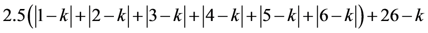
，即可求解，特别注意理想通勤时间之和计算时校车时间需要计算6次．【详解】解：（1）根据题意得：到之间有个相邻住宅间隔，
所以住在处的学生的理想通勤时间为；
（2）车站设在处
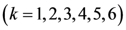
， 这6名学生从自家住宅至处总步行时间和为
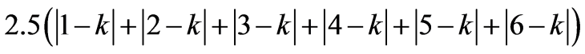
．校车从处到学校的行驶时间为，
∵一名学生的理想通勤时间是指该学生从自家住宅至车站的步行时间与校车从车站至学校的行驶时间之和，
∴这6名学生的理想通勤时间之和为
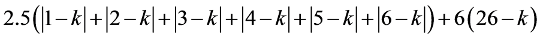
，时，总时间和为
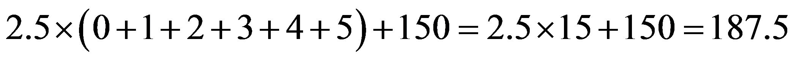
；时，总时间和为
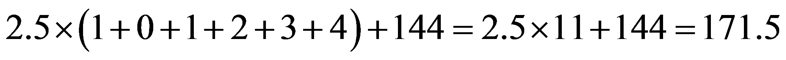
；时，总时间和为
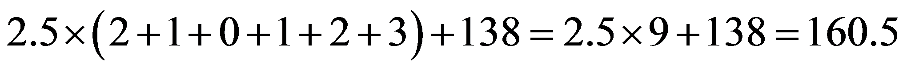
；时，总时间和为
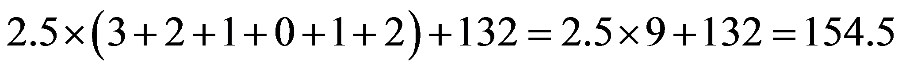
；时，总时间和为；
时，总时间和为；
因为，
所以时，总时间和最小．
三、解答题（共68分，第17~19题每题5分，第20题6分，第21题5分，第22题6分，第23题5分，第24题6分，第25题5分，第26题6分，第27~28题每题7分）
解答应写出文字说明、演算步骤或证明过程．
17. 计算：．
【答案】
【解析】
【详解】解：原式
．
18. 解不等式组： ．
．
【答案】
【解析】
【详解】解：原不等式组为
解不等式①，得
解不等式②，得 ．
．
所以原不等式组的解集为．
19. 已知，求代数式的值．
【答案】
【解析】
【详解】解：原式
，
，
，
原式．
20. 如图，在中，，D，E分别为，的中点，，．
（1）求证：四边形是平行四边形；
（2）若，，求四边形的面积．
【答案】（1）证明：在中，，E为的中点，
，
，
,
又，
四边形是平行四边形；
（2）
【解析】
【分析】（1）根据直角三角形的性质可得，从而得到，即可求证；
（2）根据三角形中位线定理可得，，从而得到，，再由四边形的面积的面积的面积，即可求解．
【小问1详解】
略
【小问2详解】
解：，E分别为，的中点，
是的中位线，
，，
，
，
∵，，
∴，，
的面积为，的面积为，
四边形的面积的面积的面积．
21. 在平面直角坐标系中，函数的图象经过点和．
（1）求 ，的值；
，的值；
（2）当时，对于的每一个值，函数的值小于函数的值，直接写出的取值范围．
【答案】（1）的值为2，的值为3
（2）
【解析】
【分析】（1）将两点坐标代入一次函数解析式，构建二元一次方程组，解方程组求出，；
（2）先写出一次函数解析式，整理不等式，分、、三类讨论，结合的取值范围列不等式求解，合并得到的范围．
【小问1详解】
解：函数的图象经过点和，
，
解得，
的值为2，的值为3；
【小问2详解】
由（1）可得，函数的解析式为：，
∵当时，对于的每一个值，函数的值小于函数的值，
∴当时，，即，
∵当时，，
∴，
解得，
∵当时，，
∴，
解得，
∵当时，恒成立，
∴符合题意，
综上所述：．
22. 在一次机器人跑步比赛中，自主导航机器人（以下称A类机器人）与遥控机器人（以下称B类机器人）在同一赛道比赛，统一排名．为鼓励自主导航技术研发，主办方制定了以下计算完赛成绩的规则：
·A类机器人的完赛成绩为从起点跑到终点的时间（包含途中维护时间）；
·B类机器人的完赛成绩为从起点跑到终点的时间（包含途中维护时间）的 倍．
倍．
已知比赛中，一台A类机器人全程保持匀速，途中没有维护，完赛成绩为 ；一台B类机器人起跑后，前
；一台B类机器人起跑后，前 保持匀速，速度是这台A类机器人的
保持匀速，速度是这台A类机器人的 倍，之后原地维护
倍，之后原地维护 ，维护后匀速跑至终点，速度比维护前增加了
，维护后匀速跑至终点，速度比维护前增加了 ，完赛成绩为
，完赛成绩为 ．求这台A类机器人的速度和此次比赛从起点到终点的路程．
．求这台A类机器人的速度和此次比赛从起点到终点的路程．
【答案】A类机器人的速度为 ，比赛起点到终点的路程为
，比赛起点到终点的路程为
【解析】
【分析】根据赛道总路程不变，设A类机器人速度为，得出全程路程 ；再根据B类成绩规则，由公示成绩算出它含维护的实际总耗时，拆分出两段行驶时长与对应速度，将两段行驶路程相加，与总路程相等建立方程求解．
；再根据B类成绩规则，由公示成绩算出它含维护的实际总耗时，拆分出两段行驶时长与对应速度，将两段行驶路程相加，与总路程相等建立方程求解．
【详解】设这台A类机器人的速度为 ，
，
由题意可知， ，
，
解得 ，
，
所以 ，
，
答：这台A类机器人的速度为 ，此次比赛从起点到终点的路程为．
，此次比赛从起点到终点的路程为．
23. 若干名学生参加编程比赛，比赛共8轮，每轮有3道题，每人每轮的得分为该轮答对题目的数量（得分为整数）．已知甲、乙两名学生8轮得分的情况如下：

根据以上信息，回答下列问题：
（1）甲8轮得分的平均数为________，乙8轮得分的平均数为________；
（2）记甲、乙8轮得分的方差分别为 和
和 ，则________（填“”“”或“”）；
，则________（填“”“”或“”）；
（3）如果丙8轮得分的中位数为，那么丙8轮得分的平均数是不是一定大于乙8轮得分的平均数？若是，请说明理由；若不是，请举出反例．
【答案】（1）2；2 （2）
（3）不是，当丙8轮的得分分别为0，0，0，2，3，3，3，3时，丙8轮得分的中位数为，但平均数为，小于乙8轮得分的平均数．
【解析】
【分析】（1）根据统计图得出甲、乙的得分，进而求得平均数；
（2）利用方差公式即可求解；
（3）举例子说明．
【小问1详解】
解：甲8轮得分的平均数为：；
乙8轮得分的平均数为：；
【小问2详解】
解：
，
．
【小问3详解】
略
24. 如图，过点P作 的两条切线，切点分别为A，B，为的直径，过点B作的垂线，垂足为E，交于点D，连接
的两条切线，切点分别为A，B，为的直径，过点B作的垂线，垂足为E，交于点D，连接 ，．
，．

（1）求证： ；
；
（2）连接 交于点F，若
交于点F，若 ，
， ，求
，求 的长．
的长．
【答案】（1）证明：连接， ，
，

 ，C，D是上的点，
，C，D是上的点，
 ，
，
 ，
， 是的两条切线，
是的两条切线，
 ，
， ，
， ，
，
点P在 的平分线上，
的平分线上，
 平分，
平分，
 ，
，
 ，为的直径，
，为的直径，
 ，
，
 ，
，
 ．
．
（2）
【解析】
【分析】（1）连接，，根据切线性质可知点P在的平分线上，根据垂径定理可知 ，再根据圆周角，圆心角的关系即可得证；
，再根据圆周角，圆心角的关系即可得证；
（2）先由垂径定理求出的半径，再解直角三角形 ，可得
，可得 ，根据相似三角形的性质可求
，根据相似三角形的性质可求 ，由
，由 即可求解．
即可求解．
【小问1详解】
略．
【小问2详解】
解：，为的直径，

 ，，
，，
在 中，，，
中，，，
 ．
．
设的半径为r，则 ，
， ，
，
在 中，由
中，由 ，
，
得 ，
，
解得 ．
．
在 中，
中， ，
， ，
，
 ，
，
 ，
，
 ，
，
 ，
，
 ，
，
即 ，
，
 ，
，
 ．
．
25. 在一定温度下，向一定量溶剂里加入某种溶质，当溶质不能继续溶解时，所得到的溶液叫作这种溶质的饱和溶液．固体的溶解度表示在一定温度下，某固态物质在溶剂里达到饱和状态时所溶解的质量．小云通过查阅资料，得到了溶剂为水时物质甲（硝酸钾）在不同温度下的溶解度数据和溶剂为水时物质乙（硝酸钠）的溶解度曲线，如下所示：
（1）根据表中数据，在图中画出范围内甲的溶解度曲线；
（2）当温度为________（精确到个位）时，甲和乙的溶解度相同，均为．在该温度下．将乙加入水中，充分搅拌使其全部溶解后，将温度降至，此时会有________（精确到个位）乙从水中析出；
（3）当温度为时，小云将甲加入到装有水的号杯中，将乙加入到装有水的号杯中，充分搅拌后，发现两种物质均不能全部溶解．为使两种物质均能全部溶解，小云考虑了以下两种方案：
方案一：将温度提升至，充分搅拌后使两种物质均能全部溶解；
方案二：保持温度不变，向号杯中再加入水，向号杯中再加入水，充分搅拌后使两种物质均能全部溶解．
①方案一中，的最小值为________（精确到个位）；
②方案二中，的最小值为________（精确到个位）．
【答案】（1）如图，即为所求；
（2）（答案不唯一）；（答案不唯一）
（3）①（答案不唯一）；②（答案不唯一）
【解析】
【分析】（1）根据表格信息描点连线即可；
（2）根据（1）中函数图象判断即可；
（3）①根据（1）中函数图象判断甲、乙溶解度达到 的温度，取较大值即可；
的温度，取较大值即可；
②根据（1）中函数图象得到时甲、乙溶解度，进而求出溶解甲、乙需要的水的总质量，求出 、
、 的值，计算即可．
的值，计算即可．
【小问1详解】
略；
【小问2详解】
解：由函数图象可知，当温度约为（精确到个位）时，甲和乙的溶解度相同；
此时溶解度，
降温到，乙溶解度约为，
因此析出乙的质量为；
【小问3详解】
①解：要让溶质完全溶解在水中，溶解度需要至少达到．
由图可知，对甲来说，溶解度达到的温度约为，对乙来说，溶解度达到的温度约为，
因此的最小值为；
②解：时甲溶解度约为，设溶解甲需要的水的总质量为，
由
解得：，
因此需要加水，
即；
时乙溶解度约为，同理得溶解乙需要的水的总质量为，
因此需要加水，
即；
最终．
26. 在平面直角坐标系中，抛物线经过点，对称轴为．
（1）求b的值，并用含a的式子表示c；
（2）已知M是抛物线上的点，M的横坐标为t，抛物线的顶点为M，且可以由抛物线平移得到（特别地，当M是的顶点时，即为）．若无论t为何值，抛物线都不经过点O，求a的取值范围．
【答案】（1），
（2）且
【解析】
【分析】（1）利用抛物线过直接得，再套用对称轴公式，化简求出；
（2）先写出顶点为的平移后抛物线，代入原点得到关于的一元二次方程，方程无实数根则判别式，解不等式得到范围．
【小问1详解】
解：抛物线经过点，
．
抛物线的对称轴为，
．
；
【小问2详解】
解：设点，
是抛物线上的点，
．
由题意，抛物线，
设抛物线与y轴交于点，则．
无论t为何值，抛物线都不经过点O，
无论t为何值，都有，
关于t的方程没有实数根．
，即．
，
化简得：，
解得：，
且．
27. 在中，，，过的中点作的垂线，交于点，点在的延长线上，．
（1）如图，，求证：；
（2）如图，点在的延长线上，，连接，，直接写出的大小，并证明．
【答案】（1）证明：∵，
∴，
∵，，
∴，
∴，
∴，
∴，，
∴；
（2）解：的大小为，
证明：如图，过点分别作，的垂线，分别交，的延长线于点，，
在中，，
∴，
∵是的中点，
∴，
∵，
∴，
∵，
又是和的公共边，
∴，
∴，
∵，
∴，
∵，
∴，
∴，
∵，
∴，
即，
∴．
【解析】
【分析】（1）得，通过，，所以，则有，然后通过直角三角形的性质可得，，再由线段的和与差即可求解；
（2）过点分别作，的垂线，分别交，的延长线于点，，分别证明，，所以，又，则，即，从而可得．
【小问1详解】
略；
【小问2详解】
略．
28. 对于不共线的三点A，B，C，连接，，并作劣弧，使得所在圆的圆心在过点A且与平行的直线上，称由，和组成的图形为单弧三角形，记作，其中所在圆的圆心称为的弧心．
在平面直角坐标系中，
（1）如图1，点，，，直接写出的弧心的坐标及的长；
（2）如图2，点，，当的弧心为O时，求点F的坐标；
（3）已知点，对于平面内的点N，存在点P，Q满足和的弧心均为O，和都不是钝角三角形，且，记N的横坐标为t，直接写出t的取值范围．
【答案】（1），
（2）点F的坐标为
（3）
【解析】
【分析】（1）先根据、两点坐标求出的垂直平分线，再结合“过点且与平行”的条件进而得到弧心坐标，最后计算半径与圆心角，代入弧长公式即可；
（2）先根据平行线的性质得出直线与的一次项系数相等，利用待定系数法代入点坐标求出直线的一次函数解析式；再根据同圆半径相等得到，结合勾股定理列出坐标方程，联立直线解析式求解并舍去已知点对应的解，即可得到点 的坐标；
的坐标；
（3）先利用同圆半径相等和勾股定理求出的长度，再通过作垂线构造矩形得到、为非钝角的有效线段长度；再分和两种情况，结合勾股定理逆定理判断是否为钝角，根据的条件列不等式求解；最后合并两种情况的取值范围即可．
【小问1详解】
解：由题意可知：弧心在过点且与平行的直线上，且弧心是所在圆的圆心，
∴弧心到、距离相等，即在的垂直平分线上，
∵，，为水平线段（平行于x轴），
∴过且平行于的直线为水平线：，
∴中点为，其垂直平分线为竖直线：，
∴两直线交点即为弧心，坐标为，
∵弧心到、距离相等，
∴半径 为弧心到点的距离：，
为弧心到点的距离：，
∵，，
∴，
∴、与弧心构成直角三角形，
∴圆心角为，
∴的长．
【小问2详解】
解：设直线的解析式为，
将，代入得：，
解得：，
∴直线的解析式为，
∵，
∴直线的解析式为，
∵，
∴直线的解析式为，
∵的弧心为O，
∴，
设点坐标为，过点作轴于点，
∴，
∴，
∵，
∴，
解得：（与点重合，舍去），，
将代入，解得，
故的坐标为．
【小问3详解】
解：弧心为，故，即在单位圆上，
设点的坐标为，
根据勾股定理可得，
过点、分别作坐标轴平行线，得：，
代入，得，
由题意可得已知直线过原点，且，
分别过点、作的垂线，交直线于、两点，
当点在线段上时，、均为直角或锐角（非钝角）；
若在左侧或右侧，对应角为钝角；
由、、，可判定四边形是矩形，
根据矩形对边相等得：，
情况1：当时，
当与原点重合时，，
代入得：，
此时为非钝角，因此整条线段都满足三角形非钝角的要求，有效区域长度为，
要存在，需有效长度，
解得，
结合得；
情况2：当时，
当与原点重合时，，
因此直线上，原点附近一段区域会使为钝角，
设中点为，∴，
，，
∵，
∴圆心到直线的距离的平方，
∴，
要存在，需钝角区域宽度，
解得，
结合得；
合并两种情况，得的取值范围为．